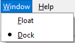

Window Menu
Window Menu
Navigation: OptiLayer Menu Commands >
Window Menu
` <idh_config_time.html>`__ ` <idh_optilayer.html>`__ ` <idh_optilayer.html>`__
This menu lists allows you to choose the display format of windows and tabs in OptiLayer.

The Flow format corresponds to the format of the program in previous versions.
The Dock format is a new feature in OptiLayer Pro that allows working in a single-window mode.